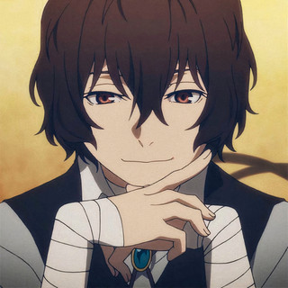

Osamu Dazai es uno de los personajes más complejos de Bungo Stray Dogs, donde cumple el rol de estratega brillante y miembro clave de la Agencia de Detectives Armados, aunque con un pasado oscuro ligado a la Port Mafia. Está inspirado en el escritor real Osamu Dazai, lo que se refleja en su carácter melancólico y su fascinación por el suicidio. Su habilidad especial, “No Longer Human”, le permite anular cualquier poder sobrenatural con solo tocar a otra persona, convirtiéndolo en un oponente extremadamente peligroso pese a no ser físicamente dominante. En cuanto a su personalidad, combina un humor excéntrico y despreocupado con una mente calculadora y profundamente inteligente, ocultando bajo su actitud bromista un trasfondo marcado por el vacío emocional, la manipulación y su pasado criminal, lo que lo convierte en un personaje ambiguo que oscila entre la luz y la oscuridad.
